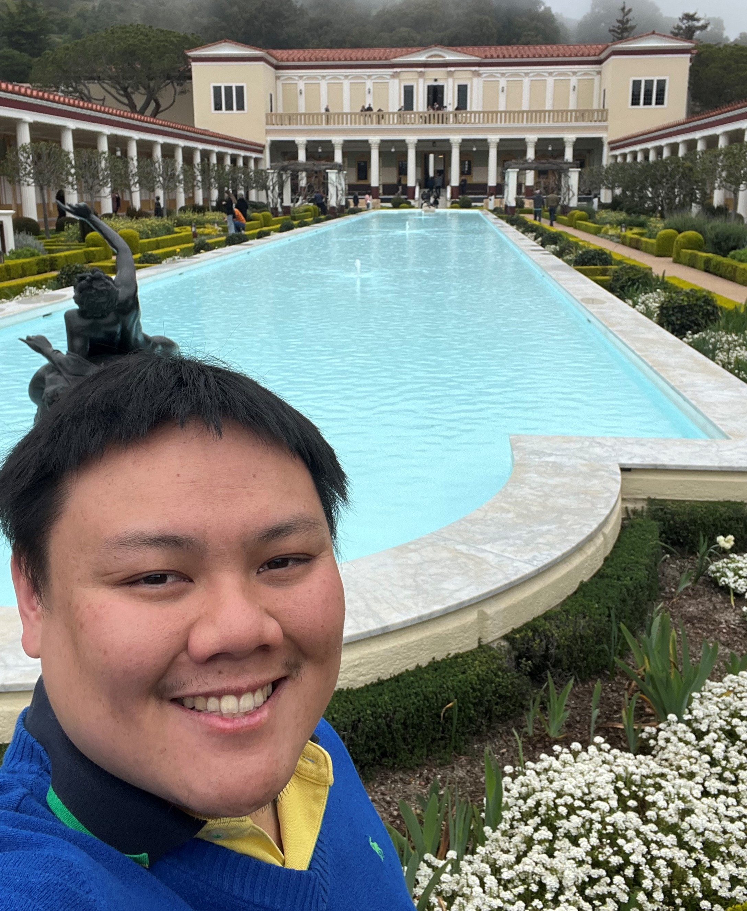

Current Students
 Kia Karbasi
PhD Student
YunZheng Zhu
PhD Student
Alex Branch
Undergraduate Student
Kia Karbasi
PhD Student
YunZheng Zhu
PhD Student
Alex Branch
Undergraduate Student
Sunay G. Bhat PhD Graduate (June 2024)  Jeffrey Jiang PhD Graduate (March 2024) Omead Pooladzandi PhD Graduate (March 2023) Mahmoud (Ramin) Essalat PhD Graduate (March 2023)
Theses and Dissertations
Ph.D. Graduates
Sunay Bhat (2024) - Robust Modeling through Causal Priors and Data Purification in Machine Learning
Jeffrey Jiang (2024) - On robust estimation in causal machine learning
Mahmoud Essalat (2023) - Time-series Classification for Monitoring Toothbrushing Behavior Using Motion Sensors
Omead Pooladzandi (2023) - Fast Training of Generalizable Deep Neural Networks
Manie Tadayon (2021) - Causal Inference for Personalized Educational Systems
Leihao Wei (2021) - Using AI to Mitigate Variability in CT Scans: Improving Consistency in Medical Image Analysis
Wenyuan Li (2020) - Improving Data Efficiency on Histopathology Image Analysis Using Deep Learning
Hemant Saggar (2020) - On Enabling Concurrent Communications in Wireless Networks
Kartik Ahuja (2019) - Optimization Methods for Resource Allocation and Machine Learning Applications
Wuwen Li (2019) - An Optimization Frameworkfor Two-tier Cellular Network Resource Allocation and Handover
Heng Zhao (2019) - Addressing Practical Challenges in High-capacity Multi-antenna Communication Systems
Hua-I Chang (2016) - Robust and Large-scale Human Motion Estimation with Low-cost Sensors
Xiaoxu Wu (2016) - Robust Human Activity Classification and Motion Monitoring Systems Using Inertial Sensors
M. Nabil H. Hajjchehade (2012) - On Classification with Unreliable Labels for Environmental and Medical Applications
Dorna Bandari (2011) - Resource Allocation for Sources with Correlated Data
Yue Zhao (2011) - On Optimal Transmissions in Interference Networks
Seung R. Yang (2010) - Cooperative Resource Allocation in Wireless Systems
Yu-Ching Tong (2009) - Cooperation Utility in Sensing
Wendong Hu (2008) - Medium Access Control Protocols for Cognitive Radio based Dynamic Spectrum Access Networks
Cathy Kong (2008) - Sampling Strategies in Sensor Networks
Kevin Ni (2008) - Sensor Network Data Faults and Their Detection Using Bayesian Methods
Aman Kansal (w/ M.B. Srivastava, 2006) - Coordinated Actuation for Sensing Uncertainty Reduction
Huiyu (Hugh) Luo (2005) - Energy Efficient Sampling, Source Coding, and Data Routing in Wireless Sensor Networks
Sivathar Natkunanathan (2004) - Signal Classification and Identification for Wireless Integrated Networked Sensors
Ameesh Pandya (2004) - On Fundamental Limits of Scalable Sensor Networks
Robert Thrasher (2004) - On the Characterization and Exploitation of Wireless Channels
Hong Chen (2003) - Training Issues in High-Speed Fiber-Optic and Radio Communication Systems
Sungsoo Kim (2003) - Multiple-Input Multiple-Output Orthogonal Frequency Division Multiplexing in Fast Fading Channels
Ryan Mukai (2003) - Neural Networks for Correction of Pointing and Focal Errors on Large Deep Space Network Antennas at Ka-Band
Yung-Szu Tu (2003) - Cooperative Communications among Wireless Sensor Networks
Vishal Ailawadhi (2002) - Mobility Issues in Hybrid Ad-Hoc Wireless Sensor Networks
Mohin Ahmed (2002) - Decentralized Information Processing in Wireless Peer-to-Peer Networks
Kambiz Shoarinejad (w/ Prof. Jason Speyer, 2001) - On Stochastic Decentralized Systems in Communications and Control
Dennis Connors (2000) - Medium Access Control Protocols for Satellite Networks
Jay Gao (2000) - Energy Efficient Routing For Wireless Sensor Networks
Kathy Sohrabi (2000) - On Low Power Self Organizing Sensor Networks
George Kondylis (2000) - On Indoor Channels and the Design of Interference Aware Medium Access Control Protocols for Packet Switched Networks
Heung-No Lee (1999) - Adaptive Diversity Combining, Equalization and Sequence Decoding for Time-Varying Dispersive Channels
Tommy Yu (1999) - Target Identification Processor For Wireless Sensor Network
Christopher Hansen (1997) - Probing Techniques for Multiuser Channels with Power Control
Jaehyeong Kim (1996) - Channel Coding for Video Transmission over Unknown Channels
Charles C. Wang (1996) - Power Control Strategies and Variable Bit Allocation for FH-CDMA Wireless Systems
Victor Lin (1995) - Channel Coding and Power Control for FH/CDMA Radios
Benjamin Tang (1995) - Adaptive Wireless Voice Communications with Embedded Source and Channel Coding
Eldad Perahia - Antenna diversity and adaptive antenna arrays for PCS
MS Thesis Graduates
James Xu (2011) - Context Guided and Personalized Activity Classification System for Wireless Health
M. Nabil H. Hajjchehade (2007) - Sensor Placement in Linear Fields: Estimation and Discrimination
Sridhar Vemuri (2004) - Scheduling for Energy Aware Wireless Sensor Applications